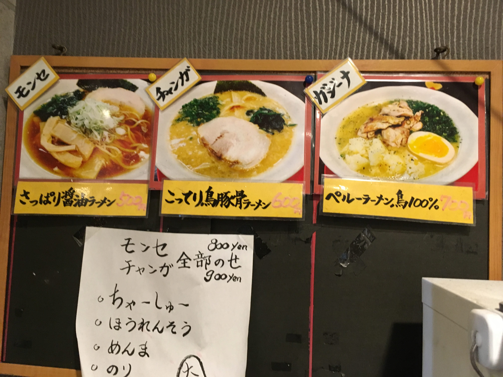
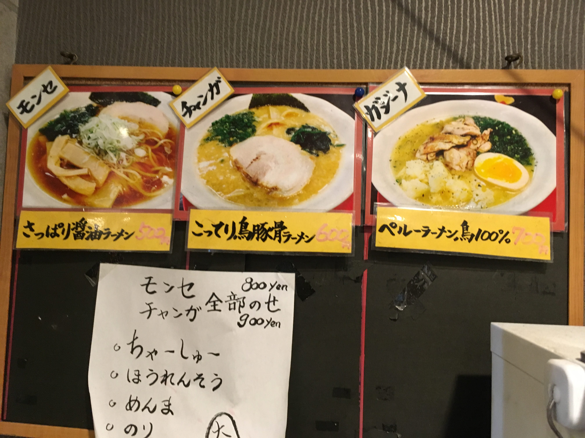

製麺所を兼ね備えたラーメン屋。「カルド・デ・ガジーナ」雌鶏のスープを使用したペルーのラーメンや混合麺などを安く、 美味しくをモットーに提供するお店(公式Facebookページより）
 



| 店舗概要 | |
|---|---|
| 店舗名 | 麺屋 門世 MONSE |
| アクセス | JR常磐線金町駅より徒歩3分 |
| 所在地 | 東京都葛飾区東金町1-20-14 吉六ビル 1F |
| 営業時間 | 11:30〜22:00 |
| 定休日 | 月曜日 |
| URL | https://www.facebook.com/menyamonse/ |
| 食べログ | https://tabelog.com/tokyo/A1324/A132403/13190180/ |